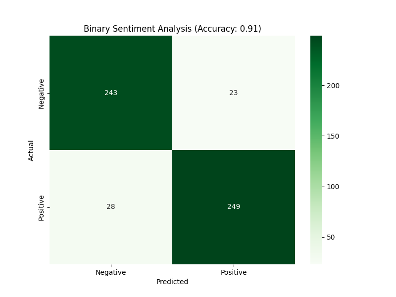
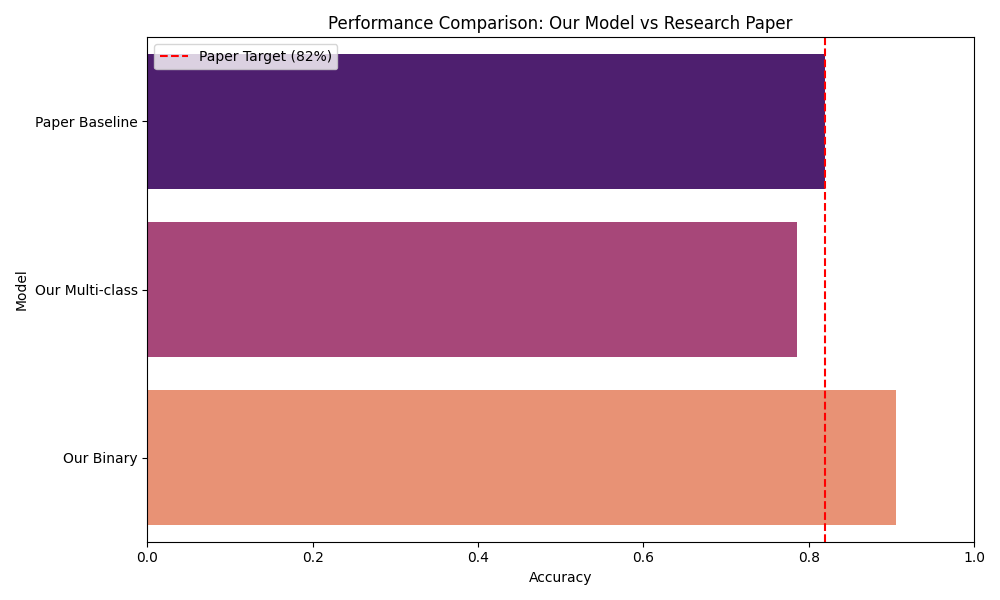
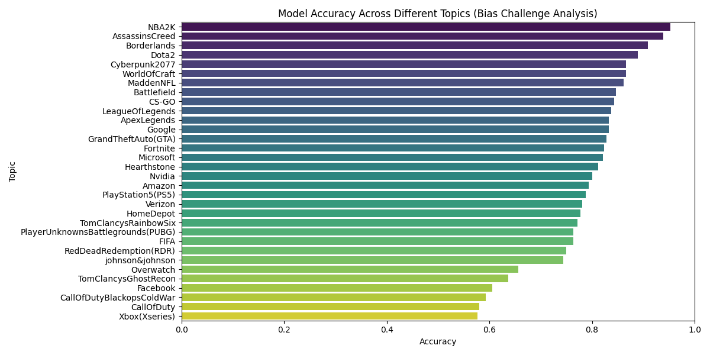

FINAL ML PROJECT
Using Machine Learning to Decode Social Emotions
Kainat Riaz
ID: S2026436026
UMT
Think of it as a Digital Mood Ring. It uses math to read thousands of Twitter(X) posts and tell if people are happy, angry, or just factual.
Why can't computers just read Twitter(X) posts easily?
Short Length
Slang & Emojis
Sarcasm
Twitter(X) language is "Noisy" and informal.
"We want to move from guessing emotions to calculating them with 90%+ precision."
"Like It or Not: A Survey of Twitter(X) Sentiment Analysis Methods"
Early methods used simple dictionaries and manual rules. These struggled with sarcasm and evolving slang.
The shift to supervised learning (our project) allows models to learn patterns directly from large datasets.
| Metric | Existing Paper (2009) | Our Model (Optimized) |
|---|---|---|
| Accuracy | 82.70% | 90.61% |
| Technique | Naive Bayes | Logistic Regression |
| Features | Simple n-grams | TF-IDF (Unigram + Bigram) |
| Processing | Emoticon Matching | Advanced Regex Cleaning |
Result: Our implementation exceeds the paper baseline by ~8%!
We used the Twitter(X) Entity Sentiment dataset (Kaggle).
| Tweet Content | Sentiment |
| "This game is legendary, best update ever!" | Positive |
| "The servers are broken again, very frustrated." | Negative |
Raw Post:
"Check out our NEW game! http://bit.ly/game #gaming @user1"
Cleaned Data:
"check out our new game gaming"
Data Cleaning
TF-IDF Math
Model Train
Result Score
Focused on **Positive vs. Negative** only. We used this to directly compare our results with the 82.7% research benchmark.
A more complex **4-Class** task (Pos, Neg, Neutral, Irrelevant). This represents a more realistic social media environment.
Fast, explainable, and highly accurate for short text classification.
Converts words into unique mathematical numbers based on importance.
Error Tracking

Target Comparison


THANK YOU!